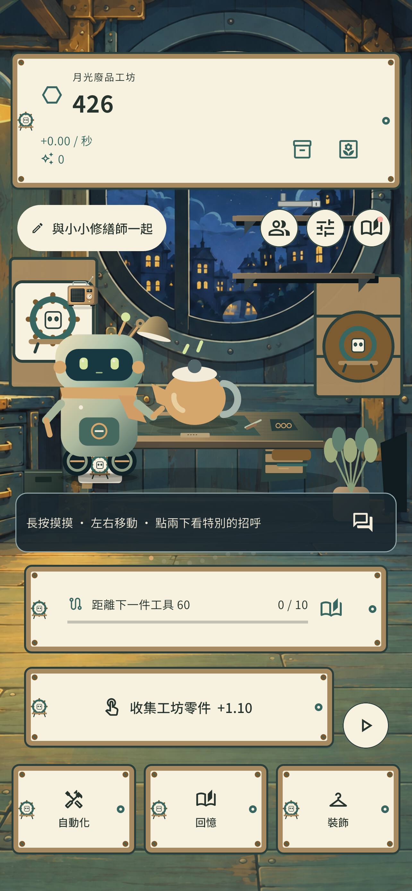
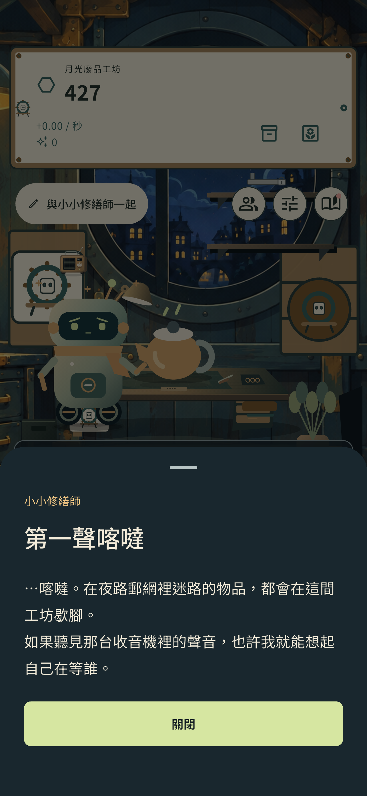
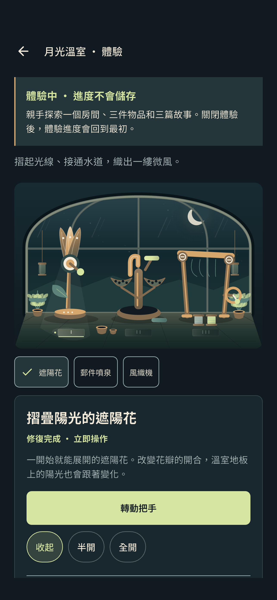

收集閃閃發亮的零件
收集工坊裡的零件，準備第一批工具。每一次小小的動手，都在為下一次修復做準備。
小小工坊，長長的歸途
夜路郵網的邊緣，有一間亮著燈的小工坊。我們正在製作一款手機遊戲：收集零件、修復舊物，和修繕師一起發現包裹裡留下的故事。
開發中 · 尚未提供一般使用者的公開下載及帳號服務。
Inside the workshop
在工坊遇見朋友、閱讀回憶，再體驗月光溫室。
左右滑動，瀏覽三張遊戲畫面。

查看原圖和小修繕師一起收集零件，開始修理。

查看原圖閱讀修理途中展開的第一篇回憶。

查看原圖在不儲存進度的體驗中，親手探索溫室物品。
在開發中的 iOS 模擬器擷取的實際遊戲畫面・繁體中文介面。點選圖片可查看原始尺寸。
小小修復，靜靜發現
在拯救整個宇宙之前，先讓某個人珍惜的物品能夠再次使用。
收集工坊裡的零件，準備第一批工具。每一次小小的動手，都在為下一次修復做準備。
添購工具，逐一修復舊物。刮痕與使用過的痕跡，也是故事的一部分。
和修繕師一起探索舊物留下的故事。看似平凡的包裹，也可能連結著某個人的回憶。
公開推出前說明
遊戲仍在開發及測試階段。公開推出時間與提供的功能，將在確定後另行公布。
此網站沒有遊戲登入、建立帳號、觀看廣告、購買或下載功能。
最後更新：2026年10月3日
開發中 · 尚未提供一般使用者的公開下載及帳號服務。
開發及隱私相關詢問：ialskdji@gmail.com。寄送資料前，請先閱讀聯絡及隱私說明。